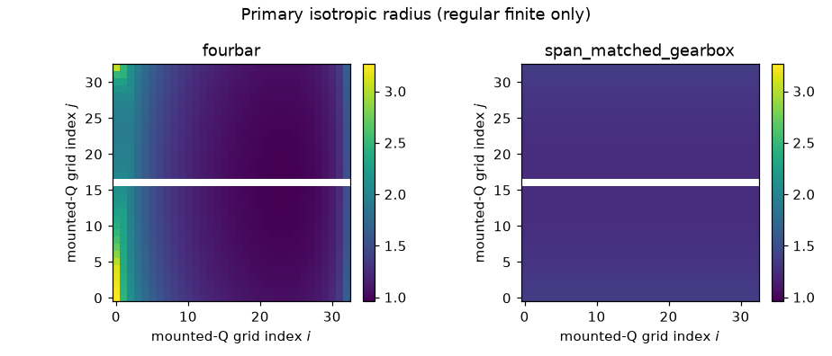

Index
span_j1_095_j2_095
Mounted-Q axes · memberships
core_span_sweep ·
J1 certified_primary ·
J2 certified_primary
Force units: normalized_torque_per_length.
Paired isotropic colour limits:
[0.9587660467254793, 3.262514271052071].
Eligible paired comparisons:
1056;
exclusions {"left_near_singular": 33}.
View isotropic capacity (default) +x ray +y ray radial ray tangential ray shape-normalized polygons selected-cell true-scale detail identity reference paired isotropic difference paired isotropic ratio whole-set status masks

Primary view: isotropic radius on the retained mounted-Q grid (axes show grid indices; cell JSON stores exact Q). Paired colour limits [0.958766, 3.26251]. Force units: normalized_torque_per_length.
Inspect a configuration
Choose a mounted-Q grid cell to inspect all three arms at the same physical
configuration. Values, named directions, rank reports, and comparisons below
come from the retained records.
Grid cell Grid (0,0) · span_j1_095_j2_095__q_0000_0000 Grid (0,1) · span_j1_095_j2_095__q_0000_0001 Grid (0,2) · span_j1_095_j2_095__q_0000_0002 Grid (0,3) · span_j1_095_j2_095__q_0000_0003 Grid (0,4) · span_j1_095_j2_095__q_0000_0004 Grid (0,5) · span_j1_095_j2_095__q_0000_0005 Grid (0,6) · span_j1_095_j2_095__q_0000_0006 Grid (0,7) · span_j1_095_j2_095__q_0000_0007 Grid (0,8) · span_j1_095_j2_095__q_0000_0008 Grid (0,9) · span_j1_095_j2_095__q_0000_0009 Grid (0,10) · span_j1_095_j2_095__q_0000_0010 Grid (0,11) · span_j1_095_j2_095__q_0000_0011 Grid (0,12) · span_j1_095_j2_095__q_0000_0012 Grid (0,13) · span_j1_095_j2_095__q_0000_0013 Grid (0,14) · span_j1_095_j2_095__q_0000_0014 Grid (0,15) · span_j1_095_j2_095__q_0000_0015 Grid (0,16) · span_j1_095_j2_095__q_0000_0016 Grid (0,17) · span_j1_095_j2_095__q_0000_0017 Grid (0,18) · span_j1_095_j2_095__q_0000_0018 Grid (0,19) · span_j1_095_j2_095__q_0000_0019 Grid (0,20) · span_j1_095_j2_095__q_0000_0020 Grid (0,21) · span_j1_095_j2_095__q_0000_0021 Grid (0,22) · span_j1_095_j2_095__q_0000_0022 Grid (0,23) · span_j1_095_j2_095__q_0000_0023 Grid (0,24) · span_j1_095_j2_095__q_0000_0024 Grid (0,25) · span_j1_095_j2_095__q_0000_0025 Grid (0,26) · span_j1_095_j2_095__q_0000_0026 Grid (0,27) · span_j1_095_j2_095__q_0000_0027 Grid (0,28) · span_j1_095_j2_095__q_0000_0028 Grid (0,29) · span_j1_095_j2_095__q_0000_0029 Grid (0,30) · span_j1_095_j2_095__q_0000_0030 Grid (0,31) · span_j1_095_j2_095__q_0000_0031 Grid (0,32) · span_j1_095_j2_095__q_0000_0032 Grid (1,0) · span_j1_095_j2_095__q_0001_0000 Grid (1,1) · span_j1_095_j2_095__q_0001_0001 Grid (1,2) · span_j1_095_j2_095__q_0001_0002 Grid (1,3) · span_j1_095_j2_095__q_0001_0003 Grid (1,4) · span_j1_095_j2_095__q_0001_0004 Grid (1,5) · span_j1_095_j2_095__q_0001_0005 Grid (1,6) · span_j1_095_j2_095__q_0001_0006 Grid (1,7) · span_j1_095_j2_095__q_0001_0007 Grid (1,8) · span_j1_095_j2_095__q_0001_0008 Grid (1,9) · span_j1_095_j2_095__q_0001_0009 Grid (1,10) · span_j1_095_j2_095__q_0001_0010 Grid (1,11) · span_j1_095_j2_095__q_0001_0011 Grid (1,12) · span_j1_095_j2_095__q_0001_0012 Grid (1,13) · span_j1_095_j2_095__q_0001_0013 Grid (1,14) · span_j1_095_j2_095__q_0001_0014 Grid (1,15) · span_j1_095_j2_095__q_0001_0015 Grid (1,16) · span_j1_095_j2_095__q_0001_0016 Grid (1,17) · span_j1_095_j2_095__q_0001_0017 Grid (1,18) · span_j1_095_j2_095__q_0001_0018 Grid (1,19) · span_j1_095_j2_095__q_0001_0019 Grid (1,20) · span_j1_095_j2_095__q_0001_0020 Grid (1,21) · span_j1_095_j2_095__q_0001_0021 Grid (1,22) · span_j1_095_j2_095__q_0001_0022 Grid (1,23) · span_j1_095_j2_095__q_0001_0023 Grid (1,24) · span_j1_095_j2_095__q_0001_0024 Grid (1,25) · span_j1_095_j2_095__q_0001_0025 Grid (1,26) · span_j1_095_j2_095__q_0001_0026 Grid (1,27) · span_j1_095_j2_095__q_0001_0027 Grid (1,28) · span_j1_095_j2_095__q_0001_0028 Grid (1,29) · span_j1_095_j2_095__q_0001_0029 Grid (1,30) · span_j1_095_j2_095__q_0001_0030 Grid (1,31) · span_j1_095_j2_095__q_0001_0031 Grid (1,32) · span_j1_095_j2_095__q_0001_0032 Grid (2,0) · span_j1_095_j2_095__q_0002_0000 Grid (2,1) · span_j1_095_j2_095__q_0002_0001 Grid (2,2) · span_j1_095_j2_095__q_0002_0002 Grid (2,3) · span_j1_095_j2_095__q_0002_0003 Grid (2,4) · span_j1_095_j2_095__q_0002_0004 Grid (2,5) · span_j1_095_j2_095__q_0002_0005 Grid (2,6) · span_j1_095_j2_095__q_0002_0006 Grid (2,7) · span_j1_095_j2_095__q_0002_0007 Grid (2,8) · span_j1_095_j2_095__q_0002_0008 Grid (2,9) · span_j1_095_j2_095__q_0002_0009 Grid (2,10) · span_j1_095_j2_095__q_0002_0010 Grid (2,11) · span_j1_095_j2_095__q_0002_0011 Grid (2,12) · span_j1_095_j2_095__q_0002_0012 Grid (2,13) · span_j1_095_j2_095__q_0002_0013 Grid (2,14) · span_j1_095_j2_095__q_0002_0014 Grid (2,15) · span_j1_095_j2_095__q_0002_0015 Grid (2,16) · span_j1_095_j2_095__q_0002_0016 Grid (2,17) · span_j1_095_j2_095__q_0002_0017 Grid (2,18) · span_j1_095_j2_095__q_0002_0018 Grid (2,19) · span_j1_095_j2_095__q_0002_0019 Grid (2,20) · span_j1_095_j2_095__q_0002_0020 Grid (2,21) · span_j1_095_j2_095__q_0002_0021 Grid (2,22) · span_j1_095_j2_095__q_0002_0022 Grid (2,23) · span_j1_095_j2_095__q_0002_0023 Grid (2,24) · span_j1_095_j2_095__q_0002_0024 Grid (2,25) · span_j1_095_j2_095__q_0002_0025 Grid (2,26) · span_j1_095_j2_095__q_0002_0026 Grid (2,27) · span_j1_095_j2_095__q_0002_0027 Grid (2,28) · span_j1_095_j2_095__q_0002_0028 Grid (2,29) · span_j1_095_j2_095__q_0002_0029 Grid (2,30) · span_j1_095_j2_095__q_0002_0030 Grid (2,31) · span_j1_095_j2_095__q_0002_0031 Grid (2,32) · span_j1_095_j2_095__q_0002_0032 Grid (3,0) · span_j1_095_j2_095__q_0003_0000 Grid (3,1) · span_j1_095_j2_095__q_0003_0001 Grid (3,2) · span_j1_095_j2_095__q_0003_0002 Grid (3,3) · span_j1_095_j2_095__q_0003_0003 Grid (3,4) · span_j1_095_j2_095__q_0003_0004 Grid (3,5) · span_j1_095_j2_095__q_0003_0005 Grid (3,6) · span_j1_095_j2_095__q_0003_0006 Grid (3,7) · span_j1_095_j2_095__q_0003_0007 Grid (3,8) · span_j1_095_j2_095__q_0003_0008 Grid (3,9) · span_j1_095_j2_095__q_0003_0009 Grid (3,10) · span_j1_095_j2_095__q_0003_0010 Grid (3,11) · span_j1_095_j2_095__q_0003_0011 Grid (3,12) · span_j1_095_j2_095__q_0003_0012 Grid (3,13) · span_j1_095_j2_095__q_0003_0013 Grid (3,14) · span_j1_095_j2_095__q_0003_0014 Grid (3,15) · span_j1_095_j2_095__q_0003_0015 Grid (3,16) · span_j1_095_j2_095__q_0003_0016 Grid (3,17) · span_j1_095_j2_095__q_0003_0017 Grid (3,18) · span_j1_095_j2_095__q_0003_0018 Grid (3,19) · span_j1_095_j2_095__q_0003_0019 Grid (3,20) · span_j1_095_j2_095__q_0003_0020 Grid (3,21) · span_j1_095_j2_095__q_0003_0021 Grid (3,22) · span_j1_095_j2_095__q_0003_0022 Grid (3,23) · span_j1_095_j2_095__q_0003_0023 Grid (3,24) · span_j1_095_j2_095__q_0003_0024 Grid (3,25) · span_j1_095_j2_095__q_0003_0025 Grid (3,26) · span_j1_095_j2_095__q_0003_0026 Grid (3,27) · span_j1_095_j2_095__q_0003_0027 Grid (3,28) · span_j1_095_j2_095__q_0003_0028 Grid (3,29) · span_j1_095_j2_095__q_0003_0029 Grid (3,30) · span_j1_095_j2_095__q_0003_0030 Grid (3,31) · span_j1_095_j2_095__q_0003_0031 Grid (3,32) · span_j1_095_j2_095__q_0003_0032 Grid (4,0) · span_j1_095_j2_095__q_0004_0000 Grid (4,1) · span_j1_095_j2_095__q_0004_0001 Grid (4,2) · span_j1_095_j2_095__q_0004_0002 Grid (4,3) · span_j1_095_j2_095__q_0004_0003 Grid (4,4) · span_j1_095_j2_095__q_0004_0004 Grid (4,5) · span_j1_095_j2_095__q_0004_0005 Grid (4,6) · span_j1_095_j2_095__q_0004_0006 Grid (4,7) · span_j1_095_j2_095__q_0004_0007 Grid (4,8) · span_j1_095_j2_095__q_0004_0008 Grid (4,9) · span_j1_095_j2_095__q_0004_0009 Grid (4,10) · span_j1_095_j2_095__q_0004_0010 Grid (4,11) · span_j1_095_j2_095__q_0004_0011 Grid (4,12) · span_j1_095_j2_095__q_0004_0012 Grid (4,13) · span_j1_095_j2_095__q_0004_0013 Grid (4,14) · span_j1_095_j2_095__q_0004_0014 Grid (4,15) · span_j1_095_j2_095__q_0004_0015 Grid (4,16) · span_j1_095_j2_095__q_0004_0016 Grid (4,17) · span_j1_095_j2_095__q_0004_0017 Grid (4,18) · span_j1_095_j2_095__q_0004_0018 Grid (4,19) · span_j1_095_j2_095__q_0004_0019 Grid (4,20) · span_j1_095_j2_095__q_0004_0020 Grid (4,21) · span_j1_095_j2_095__q_0004_0021 Grid (4,22) · span_j1_095_j2_095__q_0004_0022 Grid (4,23) · span_j1_095_j2_095__q_0004_0023 Grid (4,24) · span_j1_095_j2_095__q_0004_0024 Grid (4,25) · span_j1_095_j2_095__q_0004_0025 Grid (4,26) · span_j1_095_j2_095__q_0004_0026 Grid (4,27) · span_j1_095_j2_095__q_0004_0027 Grid (4,28) · span_j1_095_j2_095__q_0004_0028 Grid (4,29) · span_j1_095_j2_095__q_0004_0029 Grid (4,30) · span_j1_095_j2_095__q_0004_0030 Grid (4,31) · span_j1_095_j2_095__q_0004_0031 Grid (4,32) · span_j1_095_j2_095__q_0004_0032 Grid (5,0) · span_j1_095_j2_095__q_0005_0000 Grid (5,1) · span_j1_095_j2_095__q_0005_0001 Grid (5,2) · span_j1_095_j2_095__q_0005_0002 Grid (5,3) · span_j1_095_j2_095__q_0005_0003 Grid (5,4) · span_j1_095_j2_095__q_0005_0004 Grid (5,5) · span_j1_095_j2_095__q_0005_0005 Grid (5,6) · span_j1_095_j2_095__q_0005_0006 Grid (5,7) · span_j1_095_j2_095__q_0005_0007 Grid (5,8) · span_j1_095_j2_095__q_0005_0008 Grid (5,9) · span_j1_095_j2_095__q_0005_0009 Grid (5,10) · span_j1_095_j2_095__q_0005_0010 Grid (5,11) · span_j1_095_j2_095__q_0005_0011 Grid (5,12) · span_j1_095_j2_095__q_0005_0012 Grid (5,13) · span_j1_095_j2_095__q_0005_0013 Grid (5,14) · span_j1_095_j2_095__q_0005_0014 Grid (5,15) · span_j1_095_j2_095__q_0005_0015 Grid (5,16) · span_j1_095_j2_095__q_0005_0016 Grid (5,17) · span_j1_095_j2_095__q_0005_0017 Grid (5,18) · span_j1_095_j2_095__q_0005_0018 Grid (5,19) · span_j1_095_j2_095__q_0005_0019 Grid (5,20) · span_j1_095_j2_095__q_0005_0020 Grid (5,21) · span_j1_095_j2_095__q_0005_0021 Grid (5,22) · span_j1_095_j2_095__q_0005_0022 Grid (5,23) · span_j1_095_j2_095__q_0005_0023 Grid (5,24) · span_j1_095_j2_095__q_0005_0024 Grid (5,25) · span_j1_095_j2_095__q_0005_0025 Grid (5,26) · span_j1_095_j2_095__q_0005_0026 Grid (5,27) · span_j1_095_j2_095__q_0005_0027 Grid (5,28) · span_j1_095_j2_095__q_0005_0028 Grid (5,29) · span_j1_095_j2_095__q_0005_0029 Grid (5,30) · span_j1_095_j2_095__q_0005_0030 Grid (5,31) · span_j1_095_j2_095__q_0005_0031 Grid (5,32) · span_j1_095_j2_095__q_0005_0032 Grid (6,0) · span_j1_095_j2_095__q_0006_0000 Grid (6,1) · span_j1_095_j2_095__q_0006_0001 Grid (6,2) · span_j1_095_j2_095__q_0006_0002 Grid (6,3) · span_j1_095_j2_095__q_0006_0003 Grid (6,4) · span_j1_095_j2_095__q_0006_0004 Grid (6,5) · span_j1_095_j2_095__q_0006_0005 Grid (6,6) · span_j1_095_j2_095__q_0006_0006 Grid (6,7) · span_j1_095_j2_095__q_0006_0007 Grid (6,8) · span_j1_095_j2_095__q_0006_0008 Grid (6,9) · span_j1_095_j2_095__q_0006_0009 Grid (6,10) · span_j1_095_j2_095__q_0006_0010 Grid (6,11) · span_j1_095_j2_095__q_0006_0011 Grid (6,12) · span_j1_095_j2_095__q_0006_0012 Grid (6,13) · span_j1_095_j2_095__q_0006_0013 Grid (6,14) · span_j1_095_j2_095__q_0006_0014 Grid (6,15) · span_j1_095_j2_095__q_0006_0015 Grid (6,16) · span_j1_095_j2_095__q_0006_0016 Grid (6,17) · span_j1_095_j2_095__q_0006_0017 Grid (6,18) · span_j1_095_j2_095__q_0006_0018 Grid (6,19) · span_j1_095_j2_095__q_0006_0019 Grid (6,20) · span_j1_095_j2_095__q_0006_0020 Grid (6,21) · span_j1_095_j2_095__q_0006_0021 Grid (6,22) · span_j1_095_j2_095__q_0006_0022 Grid (6,23) · span_j1_095_j2_095__q_0006_0023 Grid (6,24) · span_j1_095_j2_095__q_0006_0024 Grid (6,25) · span_j1_095_j2_095__q_0006_0025 Grid (6,26) · span_j1_095_j2_095__q_0006_0026 Grid (6,27) · span_j1_095_j2_095__q_0006_0027 Grid (6,28) · span_j1_095_j2_095__q_0006_0028 Grid (6,29) · span_j1_095_j2_095__q_0006_0029 Grid (6,30) · span_j1_095_j2_095__q_0006_0030 Grid (6,31) · span_j1_095_j2_095__q_0006_0031 Grid (6,32) · span_j1_095_j2_095__q_0006_0032 Grid (7,0) · span_j1_095_j2_095__q_0007_0000 Grid (7,1) · span_j1_095_j2_095__q_0007_0001 Grid (7,2) · span_j1_095_j2_095__q_0007_0002 Grid (7,3) · span_j1_095_j2_095__q_0007_0003 Grid (7,4) · span_j1_095_j2_095__q_0007_0004 Grid (7,5) · span_j1_095_j2_095__q_0007_0005 Grid (7,6) · span_j1_095_j2_095__q_0007_0006 Grid (7,7) · span_j1_095_j2_095__q_0007_0007 Grid (7,8) · span_j1_095_j2_095__q_0007_0008 Grid (7,9) · span_j1_095_j2_095__q_0007_0009 Grid (7,10) · span_j1_095_j2_095__q_0007_0010 Grid (7,11) · span_j1_095_j2_095__q_0007_0011 Grid (7,12) · span_j1_095_j2_095__q_0007_0012 Grid (7,13) · span_j1_095_j2_095__q_0007_0013 Grid (7,14) · span_j1_095_j2_095__q_0007_0014 Grid (7,15) · span_j1_095_j2_095__q_0007_0015 Grid (7,16) · span_j1_095_j2_095__q_0007_0016 Grid (7,17) · span_j1_095_j2_095__q_0007_0017 Grid (7,18) · span_j1_095_j2_095__q_0007_0018 Grid (7,19) · span_j1_095_j2_095__q_0007_0019 Grid (7,20) · span_j1_095_j2_095__q_0007_0020 Grid (7,21) · span_j1_095_j2_095__q_0007_0021 Grid (7,22) · span_j1_095_j2_095__q_0007_0022 Grid (7,23) · span_j1_095_j2_095__q_0007_0023 Grid (7,24) · span_j1_095_j2_095__q_0007_0024 Grid (7,25) · span_j1_095_j2_095__q_0007_0025 Grid (7,26) · span_j1_095_j2_095__q_0007_0026 Grid (7,27) · span_j1_095_j2_095__q_0007_0027 Grid (7,28) · span_j1_095_j2_095__q_0007_0028 Grid (7,29) · span_j1_095_j2_095__q_0007_0029 Grid (7,30) · span_j1_095_j2_095__q_0007_0030 Grid (7,31) · span_j1_095_j2_095__q_0007_0031 Grid (7,32) · span_j1_095_j2_095__q_0007_0032 Grid (8,0) · span_j1_095_j2_095__q_0008_0000 Grid (8,1) · span_j1_095_j2_095__q_0008_0001 Grid (8,2) · span_j1_095_j2_095__q_0008_0002 Grid (8,3) · span_j1_095_j2_095__q_0008_0003 Grid (8,4) · span_j1_095_j2_095__q_0008_0004 Grid (8,5) · span_j1_095_j2_095__q_0008_0005 Grid (8,6) · span_j1_095_j2_095__q_0008_0006 Grid (8,7) · span_j1_095_j2_095__q_0008_0007 Grid (8,8) · span_j1_095_j2_095__q_0008_0008 Grid (8,9) · span_j1_095_j2_095__q_0008_0009 Grid (8,10) · span_j1_095_j2_095__q_0008_0010 Grid (8,11) · span_j1_095_j2_095__q_0008_0011 Grid (8,12) · span_j1_095_j2_095__q_0008_0012 Grid (8,13) · span_j1_095_j2_095__q_0008_0013 Grid (8,14) · span_j1_095_j2_095__q_0008_0014 Grid (8,15) · span_j1_095_j2_095__q_0008_0015 Grid (8,16) · span_j1_095_j2_095__q_0008_0016 Grid (8,17) · span_j1_095_j2_095__q_0008_0017 Grid (8,18) · span_j1_095_j2_095__q_0008_0018 Grid (8,19) · span_j1_095_j2_095__q_0008_0019 Grid (8,20) · span_j1_095_j2_095__q_0008_0020 Grid (8,21) · span_j1_095_j2_095__q_0008_0021 Grid (8,22) · span_j1_095_j2_095__q_0008_0022 Grid (8,23) · span_j1_095_j2_095__q_0008_0023 Grid (8,24) · span_j1_095_j2_095__q_0008_0024 Grid (8,25) · span_j1_095_j2_095__q_0008_0025 Grid (8,26) · span_j1_095_j2_095__q_0008_0026 Grid (8,27) · span_j1_095_j2_095__q_0008_0027 Grid (8,28) · span_j1_095_j2_095__q_0008_0028 Grid (8,29) · span_j1_095_j2_095__q_0008_0029 Grid (8,30) · span_j1_095_j2_095__q_0008_0030 Grid (8,31) · span_j1_095_j2_095__q_0008_0031 Grid (8,32) · span_j1_095_j2_095__q_0008_0032 Grid (9,0) · span_j1_095_j2_095__q_0009_0000 Grid (9,1) · span_j1_095_j2_095__q_0009_0001 Grid (9,2) · span_j1_095_j2_095__q_0009_0002 Grid (9,3) · span_j1_095_j2_095__q_0009_0003 Grid (9,4) · span_j1_095_j2_095__q_0009_0004 Grid (9,5) · span_j1_095_j2_095__q_0009_0005 Grid (9,6) · span_j1_095_j2_095__q_0009_0006 Grid (9,7) · span_j1_095_j2_095__q_0009_0007 Grid (9,8) · span_j1_095_j2_095__q_0009_0008 Grid (9,9) · span_j1_095_j2_095__q_0009_0009 Grid (9,10) · span_j1_095_j2_095__q_0009_0010 Grid (9,11) · span_j1_095_j2_095__q_0009_0011 Grid (9,12) · span_j1_095_j2_095__q_0009_0012 Grid (9,13) · span_j1_095_j2_095__q_0009_0013 Grid (9,14) · span_j1_095_j2_095__q_0009_0014 Grid (9,15) · span_j1_095_j2_095__q_0009_0015 Grid (9,16) · span_j1_095_j2_095__q_0009_0016 Grid (9,17) · span_j1_095_j2_095__q_0009_0017 Grid (9,18) · span_j1_095_j2_095__q_0009_0018 Grid (9,19) · span_j1_095_j2_095__q_0009_0019 Grid (9,20) · span_j1_095_j2_095__q_0009_0020 Grid (9,21) · span_j1_095_j2_095__q_0009_0021 Grid (9,22) · span_j1_095_j2_095__q_0009_0022 Grid (9,23) · span_j1_095_j2_095__q_0009_0023 Grid (9,24) · span_j1_095_j2_095__q_0009_0024 Grid (9,25) · span_j1_095_j2_095__q_0009_0025 Grid (9,26) · span_j1_095_j2_095__q_0009_0026 Grid (9,27) · span_j1_095_j2_095__q_0009_0027 Grid (9,28) · span_j1_095_j2_095__q_0009_0028 Grid (9,29) · span_j1_095_j2_095__q_0009_0029 Grid (9,30) · span_j1_095_j2_095__q_0009_0030 Grid (9,31) · span_j1_095_j2_095__q_0009_0031 Grid (9,32) · span_j1_095_j2_095__q_0009_0032 Grid (10,0) · span_j1_095_j2_095__q_0010_0000 Grid (10,1) · span_j1_095_j2_095__q_0010_0001 Grid (10,2) · span_j1_095_j2_095__q_0010_0002 Grid (10,3) · span_j1_095_j2_095__q_0010_0003 Grid (10,4) · span_j1_095_j2_095__q_0010_0004 Grid (10,5) · span_j1_095_j2_095__q_0010_0005 Grid (10,6) · span_j1_095_j2_095__q_0010_0006 Grid (10,7) · span_j1_095_j2_095__q_0010_0007 Grid (10,8) · span_j1_095_j2_095__q_0010_0008 Grid (10,9) · span_j1_095_j2_095__q_0010_0009 Grid (10,10) · span_j1_095_j2_095__q_0010_0010 Grid (10,11) · span_j1_095_j2_095__q_0010_0011 Grid (10,12) · span_j1_095_j2_095__q_0010_0012 Grid (10,13) · span_j1_095_j2_095__q_0010_0013 Grid (10,14) · span_j1_095_j2_095__q_0010_0014 Grid (10,15) · span_j1_095_j2_095__q_0010_0015 Grid (10,16) · span_j1_095_j2_095__q_0010_0016 Grid (10,17) · span_j1_095_j2_095__q_0010_0017 Grid (10,18) · span_j1_095_j2_095__q_0010_0018 Grid (10,19) · span_j1_095_j2_095__q_0010_0019 Grid (10,20) · span_j1_095_j2_095__q_0010_0020 Grid (10,21) · span_j1_095_j2_095__q_0010_0021 Grid (10,22) · span_j1_095_j2_095__q_0010_0022 Grid (10,23) · span_j1_095_j2_095__q_0010_0023 Grid (10,24) · span_j1_095_j2_095__q_0010_0024 Grid (10,25) · span_j1_095_j2_095__q_0010_0025 Grid (10,26) · span_j1_095_j2_095__q_0010_0026 Grid (10,27) · span_j1_095_j2_095__q_0010_0027 Grid (10,28) · span_j1_095_j2_095__q_0010_0028 Grid (10,29) · span_j1_095_j2_095__q_0010_0029 Grid (10,30) · span_j1_095_j2_095__q_0010_0030 Grid (10,31) · span_j1_095_j2_095__q_0010_0031 Grid (10,32) · span_j1_095_j2_095__q_0010_0032 Grid (11,0) · span_j1_095_j2_095__q_0011_0000 Grid (11,1) · span_j1_095_j2_095__q_0011_0001 Grid (11,2) · span_j1_095_j2_095__q_0011_0002 Grid (11,3) · span_j1_095_j2_095__q_0011_0003 Grid (11,4) · span_j1_095_j2_095__q_0011_0004 Grid (11,5) · span_j1_095_j2_095__q_0011_0005 Grid (11,6) · span_j1_095_j2_095__q_0011_0006 Grid (11,7) · span_j1_095_j2_095__q_0011_0007 Grid (11,8) · span_j1_095_j2_095__q_0011_0008 Grid (11,9) · span_j1_095_j2_095__q_0011_0009 Grid (11,10) · span_j1_095_j2_095__q_0011_0010 Grid (11,11) · span_j1_095_j2_095__q_0011_0011 Grid (11,12) · span_j1_095_j2_095__q_0011_0012 Grid (11,13) · span_j1_095_j2_095__q_0011_0013 Grid (11,14) · span_j1_095_j2_095__q_0011_0014 Grid (11,15) · span_j1_095_j2_095__q_0011_0015 Grid (11,16) · span_j1_095_j2_095__q_0011_0016 Grid (11,17) · span_j1_095_j2_095__q_0011_0017 Grid (11,18) · span_j1_095_j2_095__q_0011_0018 Grid (11,19) · span_j1_095_j2_095__q_0011_0019 Grid (11,20) · span_j1_095_j2_095__q_0011_0020 Grid (11,21) · span_j1_095_j2_095__q_0011_0021 Grid (11,22) · span_j1_095_j2_095__q_0011_0022 Grid (11,23) · span_j1_095_j2_095__q_0011_0023 Grid (11,24) · span_j1_095_j2_095__q_0011_0024 Grid (11,25) · span_j1_095_j2_095__q_0011_0025 Grid (11,26) · span_j1_095_j2_095__q_0011_0026 Grid (11,27) · span_j1_095_j2_095__q_0011_0027 Grid (11,28) · span_j1_095_j2_095__q_0011_0028 Grid (11,29) · span_j1_095_j2_095__q_0011_0029 Grid (11,30) · span_j1_095_j2_095__q_0011_0030 Grid (11,31) · span_j1_095_j2_095__q_0011_0031 Grid (11,32) · span_j1_095_j2_095__q_0011_0032 Grid (12,0) · span_j1_095_j2_095__q_0012_0000 Grid (12,1) · span_j1_095_j2_095__q_0012_0001 Grid (12,2) · span_j1_095_j2_095__q_0012_0002 Grid (12,3) · span_j1_095_j2_095__q_0012_0003 Grid (12,4) · span_j1_095_j2_095__q_0012_0004 Grid (12,5) · span_j1_095_j2_095__q_0012_0005 Grid (12,6) · span_j1_095_j2_095__q_0012_0006 Grid (12,7) · span_j1_095_j2_095__q_0012_0007 Grid (12,8) · span_j1_095_j2_095__q_0012_0008 Grid (12,9) · span_j1_095_j2_095__q_0012_0009 Grid (12,10) · span_j1_095_j2_095__q_0012_0010 Grid (12,11) · span_j1_095_j2_095__q_0012_0011 Grid (12,12) · span_j1_095_j2_095__q_0012_0012 Grid (12,13) · span_j1_095_j2_095__q_0012_0013 Grid (12,14) · span_j1_095_j2_095__q_0012_0014 Grid (12,15) · span_j1_095_j2_095__q_0012_0015 Grid (12,16) · span_j1_095_j2_095__q_0012_0016 Grid (12,17) · span_j1_095_j2_095__q_0012_0017 Grid (12,18) · span_j1_095_j2_095__q_0012_0018 Grid (12,19) · span_j1_095_j2_095__q_0012_0019 Grid (12,20) · span_j1_095_j2_095__q_0012_0020 Grid (12,21) · span_j1_095_j2_095__q_0012_0021 Grid (12,22) · span_j1_095_j2_095__q_0012_0022 Grid (12,23) · span_j1_095_j2_095__q_0012_0023 Grid (12,24) · span_j1_095_j2_095__q_0012_0024 Grid (12,25) · span_j1_095_j2_095__q_0012_0025 Grid (12,26) · span_j1_095_j2_095__q_0012_0026 Grid (12,27) · span_j1_095_j2_095__q_0012_0027 Grid (12,28) · span_j1_095_j2_095__q_0012_0028 Grid (12,29) · span_j1_095_j2_095__q_0012_0029 Grid (12,30) · span_j1_095_j2_095__q_0012_0030 Grid (12,31) · span_j1_095_j2_095__q_0012_0031 Grid (12,32) · span_j1_095_j2_095__q_0012_0032 Grid (13,0) · span_j1_095_j2_095__q_0013_0000 Grid (13,1) · span_j1_095_j2_095__q_0013_0001 Grid (13,2) · span_j1_095_j2_095__q_0013_0002 Grid (13,3) · span_j1_095_j2_095__q_0013_0003 Grid (13,4) · span_j1_095_j2_095__q_0013_0004 Grid (13,5) · span_j1_095_j2_095__q_0013_0005 Grid (13,6) · span_j1_095_j2_095__q_0013_0006 Grid (13,7) · span_j1_095_j2_095__q_0013_0007 Grid (13,8) · span_j1_095_j2_095__q_0013_0008 Grid (13,9) · span_j1_095_j2_095__q_0013_0009 Grid (13,10) · span_j1_095_j2_095__q_0013_0010 Grid (13,11) · span_j1_095_j2_095__q_0013_0011 Grid (13,12) · span_j1_095_j2_095__q_0013_0012 Grid (13,13) · span_j1_095_j2_095__q_0013_0013 Grid (13,14) · span_j1_095_j2_095__q_0013_0014 Grid (13,15) · span_j1_095_j2_095__q_0013_0015 Grid (13,16) · span_j1_095_j2_095__q_0013_0016 Grid (13,17) · span_j1_095_j2_095__q_0013_0017 Grid (13,18) · span_j1_095_j2_095__q_0013_0018 Grid (13,19) · span_j1_095_j2_095__q_0013_0019 Grid (13,20) · span_j1_095_j2_095__q_0013_0020 Grid (13,21) · span_j1_095_j2_095__q_0013_0021 Grid (13,22) · span_j1_095_j2_095__q_0013_0022 Grid (13,23) · span_j1_095_j2_095__q_0013_0023 Grid (13,24) · span_j1_095_j2_095__q_0013_0024 Grid (13,25) · span_j1_095_j2_095__q_0013_0025 Grid (13,26) · span_j1_095_j2_095__q_0013_0026 Grid (13,27) · span_j1_095_j2_095__q_0013_0027 Grid (13,28) · span_j1_095_j2_095__q_0013_0028 Grid (13,29) · span_j1_095_j2_095__q_0013_0029 Grid (13,30) · span_j1_095_j2_095__q_0013_0030 Grid (13,31) · span_j1_095_j2_095__q_0013_0031 Grid (13,32) · span_j1_095_j2_095__q_0013_0032 Grid (14,0) · span_j1_095_j2_095__q_0014_0000 Grid (14,1) · span_j1_095_j2_095__q_0014_0001 Grid (14,2) · span_j1_095_j2_095__q_0014_0002 Grid (14,3) · span_j1_095_j2_095__q_0014_0003 Grid (14,4) · span_j1_095_j2_095__q_0014_0004 Grid (14,5) · span_j1_095_j2_095__q_0014_0005 Grid (14,6) · span_j1_095_j2_095__q_0014_0006 Grid (14,7) · span_j1_095_j2_095__q_0014_0007 Grid (14,8) · span_j1_095_j2_095__q_0014_0008 Grid (14,9) · span_j1_095_j2_095__q_0014_0009 Grid (14,10) · span_j1_095_j2_095__q_0014_0010 Grid (14,11) · span_j1_095_j2_095__q_0014_0011 Grid (14,12) · span_j1_095_j2_095__q_0014_0012 Grid (14,13) · span_j1_095_j2_095__q_0014_0013 Grid (14,14) · span_j1_095_j2_095__q_0014_0014 Grid (14,15) · span_j1_095_j2_095__q_0014_0015 Grid (14,16) · span_j1_095_j2_095__q_0014_0016 Grid (14,17) · span_j1_095_j2_095__q_0014_0017 Grid (14,18) · span_j1_095_j2_095__q_0014_0018 Grid (14,19) · span_j1_095_j2_095__q_0014_0019 Grid (14,20) · span_j1_095_j2_095__q_0014_0020 Grid (14,21) · span_j1_095_j2_095__q_0014_0021 Grid (14,22) · span_j1_095_j2_095__q_0014_0022 Grid (14,23) · span_j1_095_j2_095__q_0014_0023 Grid (14,24) · span_j1_095_j2_095__q_0014_0024 Grid (14,25) · span_j1_095_j2_095__q_0014_0025 Grid (14,26) · span_j1_095_j2_095__q_0014_0026 Grid (14,27) · span_j1_095_j2_095__q_0014_0027 Grid (14,28) · span_j1_095_j2_095__q_0014_0028 Grid (14,29) · span_j1_095_j2_095__q_0014_0029 Grid (14,30) · span_j1_095_j2_095__q_0014_0030 Grid (14,31) · span_j1_095_j2_095__q_0014_0031 Grid (14,32) · span_j1_095_j2_095__q_0014_0032 Grid (15,0) · span_j1_095_j2_095__q_0015_0000 Grid (15,1) · span_j1_095_j2_095__q_0015_0001 Grid (15,2) · span_j1_095_j2_095__q_0015_0002 Grid (15,3) · span_j1_095_j2_095__q_0015_0003 Grid (15,4) · span_j1_095_j2_095__q_0015_0004 Grid (15,5) · span_j1_095_j2_095__q_0015_0005 Grid (15,6) · span_j1_095_j2_095__q_0015_0006 Grid (15,7) · span_j1_095_j2_095__q_0015_0007 Grid (15,8) · span_j1_095_j2_095__q_0015_0008 Grid (15,9) · span_j1_095_j2_095__q_0015_0009 Grid (15,10) · span_j1_095_j2_095__q_0015_0010 Grid (15,11) · span_j1_095_j2_095__q_0015_0011 Grid (15,12) · span_j1_095_j2_095__q_0015_0012 Grid (15,13) · span_j1_095_j2_095__q_0015_0013 Grid (15,14) · span_j1_095_j2_095__q_0015_0014 Grid (15,15) · span_j1_095_j2_095__q_0015_0015 Grid (15,16) · span_j1_095_j2_095__q_0015_0016 Grid (15,17) · span_j1_095_j2_095__q_0015_0017 Grid (15,18) · span_j1_095_j2_095__q_0015_0018 Grid (15,19) · span_j1_095_j2_095__q_0015_0019 Grid (15,20) · span_j1_095_j2_095__q_0015_0020 Grid (15,21) · span_j1_095_j2_095__q_0015_0021 Grid (15,22) · span_j1_095_j2_095__q_0015_0022 Grid (15,23) · span_j1_095_j2_095__q_0015_0023 Grid (15,24) · span_j1_095_j2_095__q_0015_0024 Grid (15,25) · span_j1_095_j2_095__q_0015_0025 Grid (15,26) · span_j1_095_j2_095__q_0015_0026 Grid (15,27) · span_j1_095_j2_095__q_0015_0027 Grid (15,28) · span_j1_095_j2_095__q_0015_0028 Grid (15,29) · span_j1_095_j2_095__q_0015_0029 Grid (15,30) · span_j1_095_j2_095__q_0015_0030 Grid (15,31) · span_j1_095_j2_095__q_0015_0031 Grid (15,32) · span_j1_095_j2_095__q_0015_0032 Grid (16,0) · span_j1_095_j2_095__q_0016_0000 Grid (16,1) · span_j1_095_j2_095__q_0016_0001 Grid (16,2) · span_j1_095_j2_095__q_0016_0002 Grid (16,3) · span_j1_095_j2_095__q_0016_0003 Grid (16,4) · span_j1_095_j2_095__q_0016_0004 Grid (16,5) · span_j1_095_j2_095__q_0016_0005 Grid (16,6) · span_j1_095_j2_095__q_0016_0006 Grid (16,7) · span_j1_095_j2_095__q_0016_0007 Grid (16,8) · span_j1_095_j2_095__q_0016_0008 Grid (16,9) · span_j1_095_j2_095__q_0016_0009 Grid (16,10) · span_j1_095_j2_095__q_0016_0010 Grid (16,11) · span_j1_095_j2_095__q_0016_0011 Grid (16,12) · span_j1_095_j2_095__q_0016_0012 Grid (16,13) · span_j1_095_j2_095__q_0016_0013 Grid (16,14) · span_j1_095_j2_095__q_0016_0014 Grid (16,15) · span_j1_095_j2_095__q_0016_0015 Grid (16,16) · span_j1_095_j2_095__q_0016_0016 Grid (16,17) · span_j1_095_j2_095__q_0016_0017 Grid (16,18) · span_j1_095_j2_095__q_0016_0018 Grid (16,19) · span_j1_095_j2_095__q_0016_0019 Grid (16,20) · span_j1_095_j2_095__q_0016_0020 Grid (16,21) · span_j1_095_j2_095__q_0016_0021 Grid (16,22) · span_j1_095_j2_095__q_0016_0022 Grid (16,23) · span_j1_095_j2_095__q_0016_0023 Grid (16,24) · span_j1_095_j2_095__q_0016_0024 Grid (16,25) · span_j1_095_j2_095__q_0016_0025 Grid (16,26) · span_j1_095_j2_095__q_0016_0026 Grid (16,27) · span_j1_095_j2_095__q_0016_0027 Grid (16,28) · span_j1_095_j2_095__q_0016_0028 Grid (16,29) · span_j1_095_j2_095__q_0016_0029 Grid (16,30) · span_j1_095_j2_095__q_0016_0030 Grid (16,31) · span_j1_095_j2_095__q_0016_0031 Grid (16,32) · span_j1_095_j2_095__q_0016_0032 Grid (17,0) · span_j1_095_j2_095__q_0017_0000 Grid (17,1) · span_j1_095_j2_095__q_0017_0001 Grid (17,2) · span_j1_095_j2_095__q_0017_0002 Grid (17,3) · span_j1_095_j2_095__q_0017_0003 Grid (17,4) · span_j1_095_j2_095__q_0017_0004 Grid (17,5) · span_j1_095_j2_095__q_0017_0005 Grid (17,6) · span_j1_095_j2_095__q_0017_0006 Grid (17,7) · span_j1_095_j2_095__q_0017_0007 Grid (17,8) · span_j1_095_j2_095__q_0017_0008 Grid (17,9) · span_j1_095_j2_095__q_0017_0009 Grid (17,10) · span_j1_095_j2_095__q_0017_0010 Grid (17,11) · span_j1_095_j2_095__q_0017_0011 Grid (17,12) · span_j1_095_j2_095__q_0017_0012 Grid (17,13) · span_j1_095_j2_095__q_0017_0013 Grid (17,14) · span_j1_095_j2_095__q_0017_0014 Grid (17,15) · span_j1_095_j2_095__q_0017_0015 Grid (17,16) · span_j1_095_j2_095__q_0017_0016 Grid (17,17) · span_j1_095_j2_095__q_0017_0017 Grid (17,18) · span_j1_095_j2_095__q_0017_0018 Grid (17,19) · span_j1_095_j2_095__q_0017_0019 Grid (17,20) · span_j1_095_j2_095__q_0017_0020 Grid (17,21) · span_j1_095_j2_095__q_0017_0021 Grid (17,22) · span_j1_095_j2_095__q_0017_0022 Grid (17,23) · span_j1_095_j2_095__q_0017_0023 Grid (17,24) · span_j1_095_j2_095__q_0017_0024 Grid (17,25) · span_j1_095_j2_095__q_0017_0025 Grid (17,26) · span_j1_095_j2_095__q_0017_0026 Grid (17,27) · span_j1_095_j2_095__q_0017_0027 Grid (17,28) · span_j1_095_j2_095__q_0017_0028 Grid (17,29) · span_j1_095_j2_095__q_0017_0029 Grid (17,30) · span_j1_095_j2_095__q_0017_0030 Grid (17,31) · span_j1_095_j2_095__q_0017_0031 Grid (17,32) · span_j1_095_j2_095__q_0017_0032 Grid (18,0) · span_j1_095_j2_095__q_0018_0000 Grid (18,1) · span_j1_095_j2_095__q_0018_0001 Grid (18,2) · span_j1_095_j2_095__q_0018_0002 Grid (18,3) · span_j1_095_j2_095__q_0018_0003 Grid (18,4) · span_j1_095_j2_095__q_0018_0004 Grid (18,5) · span_j1_095_j2_095__q_0018_0005 Grid (18,6) · span_j1_095_j2_095__q_0018_0006 Grid (18,7) · span_j1_095_j2_095__q_0018_0007 Grid (18,8) · span_j1_095_j2_095__q_0018_0008 Grid (18,9) · span_j1_095_j2_095__q_0018_0009 Grid (18,10) · span_j1_095_j2_095__q_0018_0010 Grid (18,11) · span_j1_095_j2_095__q_0018_0011 Grid (18,12) · span_j1_095_j2_095__q_0018_0012 Grid (18,13) · span_j1_095_j2_095__q_0018_0013 Grid (18,14) · span_j1_095_j2_095__q_0018_0014 Grid (18,15) · span_j1_095_j2_095__q_0018_0015 Grid (18,16) · span_j1_095_j2_095__q_0018_0016 Grid (18,17) · span_j1_095_j2_095__q_0018_0017 Grid (18,18) · span_j1_095_j2_095__q_0018_0018 Grid (18,19) · span_j1_095_j2_095__q_0018_0019 Grid (18,20) · span_j1_095_j2_095__q_0018_0020 Grid (18,21) · span_j1_095_j2_095__q_0018_0021 Grid (18,22) · span_j1_095_j2_095__q_0018_0022 Grid (18,23) · span_j1_095_j2_095__q_0018_0023 Grid (18,24) · span_j1_095_j2_095__q_0018_0024 Grid (18,25) · span_j1_095_j2_095__q_0018_0025 Grid (18,26) · span_j1_095_j2_095__q_0018_0026 Grid (18,27) · span_j1_095_j2_095__q_0018_0027 Grid (18,28) · span_j1_095_j2_095__q_0018_0028 Grid (18,29) · span_j1_095_j2_095__q_0018_0029 Grid (18,30) · span_j1_095_j2_095__q_0018_0030 Grid (18,31) · span_j1_095_j2_095__q_0018_0031 Grid (18,32) · span_j1_095_j2_095__q_0018_0032 Grid (19,0) · span_j1_095_j2_095__q_0019_0000 Grid (19,1) · span_j1_095_j2_095__q_0019_0001 Grid (19,2) · span_j1_095_j2_095__q_0019_0002 Grid (19,3) · span_j1_095_j2_095__q_0019_0003 Grid (19,4) · span_j1_095_j2_095__q_0019_0004 Grid (19,5) · span_j1_095_j2_095__q_0019_0005 Grid (19,6) · span_j1_095_j2_095__q_0019_0006 Grid (19,7) · span_j1_095_j2_095__q_0019_0007 Grid (19,8) · span_j1_095_j2_095__q_0019_0008 Grid (19,9) · span_j1_095_j2_095__q_0019_0009 Grid (19,10) · span_j1_095_j2_095__q_0019_0010 Grid (19,11) · span_j1_095_j2_095__q_0019_0011 Grid (19,12) · span_j1_095_j2_095__q_0019_0012 Grid (19,13) · span_j1_095_j2_095__q_0019_0013 Grid (19,14) · span_j1_095_j2_095__q_0019_0014 Grid (19,15) · span_j1_095_j2_095__q_0019_0015 Grid (19,16) · span_j1_095_j2_095__q_0019_0016 Grid (19,17) · span_j1_095_j2_095__q_0019_0017 Grid (19,18) · span_j1_095_j2_095__q_0019_0018 Grid (19,19) · span_j1_095_j2_095__q_0019_0019 Grid (19,20) · span_j1_095_j2_095__q_0019_0020 Grid (19,21) · span_j1_095_j2_095__q_0019_0021 Grid (19,22) · span_j1_095_j2_095__q_0019_0022 Grid (19,23) · span_j1_095_j2_095__q_0019_0023 Grid (19,24) · span_j1_095_j2_095__q_0019_0024 Grid (19,25) · span_j1_095_j2_095__q_0019_0025 Grid (19,26) · span_j1_095_j2_095__q_0019_0026 Grid (19,27) · span_j1_095_j2_095__q_0019_0027 Grid (19,28) · span_j1_095_j2_095__q_0019_0028 Grid (19,29) · span_j1_095_j2_095__q_0019_0029 Grid (19,30) · span_j1_095_j2_095__q_0019_0030 Grid (19,31) · span_j1_095_j2_095__q_0019_0031 Grid (19,32) · span_j1_095_j2_095__q_0019_0032 Grid (20,0) · span_j1_095_j2_095__q_0020_0000 Grid (20,1) · span_j1_095_j2_095__q_0020_0001 Grid (20,2) · span_j1_095_j2_095__q_0020_0002 Grid (20,3) · span_j1_095_j2_095__q_0020_0003 Grid (20,4) · span_j1_095_j2_095__q_0020_0004 Grid (20,5) · span_j1_095_j2_095__q_0020_0005 Grid (20,6) · span_j1_095_j2_095__q_0020_0006 Grid (20,7) · span_j1_095_j2_095__q_0020_0007 Grid (20,8) · span_j1_095_j2_095__q_0020_0008 Grid (20,9) · span_j1_095_j2_095__q_0020_0009 Grid (20,10) · span_j1_095_j2_095__q_0020_0010 Grid (20,11) · span_j1_095_j2_095__q_0020_0011 Grid (20,12) · span_j1_095_j2_095__q_0020_0012 Grid (20,13) · span_j1_095_j2_095__q_0020_0013 Grid (20,14) · span_j1_095_j2_095__q_0020_0014 Grid (20,15) · span_j1_095_j2_095__q_0020_0015 Grid (20,16) · span_j1_095_j2_095__q_0020_0016 Grid (20,17) · span_j1_095_j2_095__q_0020_0017 Grid (20,18) · span_j1_095_j2_095__q_0020_0018 Grid (20,19) · span_j1_095_j2_095__q_0020_0019 Grid (20,20) · span_j1_095_j2_095__q_0020_0020 Grid (20,21) · span_j1_095_j2_095__q_0020_0021 Grid (20,22) · span_j1_095_j2_095__q_0020_0022 Grid (20,23) · span_j1_095_j2_095__q_0020_0023 Grid (20,24) · span_j1_095_j2_095__q_0020_0024 Grid (20,25) · span_j1_095_j2_095__q_0020_0025 Grid (20,26) · span_j1_095_j2_095__q_0020_0026 Grid (20,27) · span_j1_095_j2_095__q_0020_0027 Grid (20,28) · span_j1_095_j2_095__q_0020_0028 Grid (20,29) · span_j1_095_j2_095__q_0020_0029 Grid (20,30) · span_j1_095_j2_095__q_0020_0030 Grid (20,31) · span_j1_095_j2_095__q_0020_0031 Grid (20,32) · span_j1_095_j2_095__q_0020_0032 Grid (21,0) · span_j1_095_j2_095__q_0021_0000 Grid (21,1) · span_j1_095_j2_095__q_0021_0001 Grid (21,2) · span_j1_095_j2_095__q_0021_0002 Grid (21,3) · span_j1_095_j2_095__q_0021_0003 Grid (21,4) · span_j1_095_j2_095__q_0021_0004 Grid (21,5) · span_j1_095_j2_095__q_0021_0005 Grid (21,6) · span_j1_095_j2_095__q_0021_0006 Grid (21,7) · span_j1_095_j2_095__q_0021_0007 Grid (21,8) · span_j1_095_j2_095__q_0021_0008 Grid (21,9) · span_j1_095_j2_095__q_0021_0009 Grid (21,10) · span_j1_095_j2_095__q_0021_0010 Grid (21,11) · span_j1_095_j2_095__q_0021_0011 Grid (21,12) · span_j1_095_j2_095__q_0021_0012 Grid (21,13) · span_j1_095_j2_095__q_0021_0013 Grid (21,14) · span_j1_095_j2_095__q_0021_0014 Grid (21,15) · span_j1_095_j2_095__q_0021_0015 Grid (21,16) · span_j1_095_j2_095__q_0021_0016 Grid (21,17) · span_j1_095_j2_095__q_0021_0017 Grid (21,18) · span_j1_095_j2_095__q_0021_0018 Grid (21,19) · span_j1_095_j2_095__q_0021_0019 Grid (21,20) · span_j1_095_j2_095__q_0021_0020 Grid (21,21) · span_j1_095_j2_095__q_0021_0021 Grid (21,22) · span_j1_095_j2_095__q_0021_0022 Grid (21,23) · span_j1_095_j2_095__q_0021_0023 Grid (21,24) · span_j1_095_j2_095__q_0021_0024 Grid (21,25) · span_j1_095_j2_095__q_0021_0025 Grid (21,26) · span_j1_095_j2_095__q_0021_0026 Grid (21,27) · span_j1_095_j2_095__q_0021_0027 Grid (21,28) · span_j1_095_j2_095__q_0021_0028 Grid (21,29) · span_j1_095_j2_095__q_0021_0029 Grid (21,30) · span_j1_095_j2_095__q_0021_0030 Grid (21,31) · span_j1_095_j2_095__q_0021_0031 Grid (21,32) · span_j1_095_j2_095__q_0021_0032 Grid (22,0) · span_j1_095_j2_095__q_0022_0000 Grid (22,1) · span_j1_095_j2_095__q_0022_0001 Grid (22,2) · span_j1_095_j2_095__q_0022_0002 Grid (22,3) · span_j1_095_j2_095__q_0022_0003 Grid (22,4) · span_j1_095_j2_095__q_0022_0004 Grid (22,5) · span_j1_095_j2_095__q_0022_0005 Grid (22,6) · span_j1_095_j2_095__q_0022_0006 Grid (22,7) · span_j1_095_j2_095__q_0022_0007 Grid (22,8) · span_j1_095_j2_095__q_0022_0008 Grid (22,9) · span_j1_095_j2_095__q_0022_0009 Grid (22,10) · span_j1_095_j2_095__q_0022_0010 Grid (22,11) · span_j1_095_j2_095__q_0022_0011 Grid (22,12) · span_j1_095_j2_095__q_0022_0012 Grid (22,13) · span_j1_095_j2_095__q_0022_0013 Grid (22,14) · span_j1_095_j2_095__q_0022_0014 Grid (22,15) · span_j1_095_j2_095__q_0022_0015 Grid (22,16) · span_j1_095_j2_095__q_0022_0016 Grid (22,17) · span_j1_095_j2_095__q_0022_0017 Grid (22,18) · span_j1_095_j2_095__q_0022_0018 Grid (22,19) · span_j1_095_j2_095__q_0022_0019 Grid (22,20) · span_j1_095_j2_095__q_0022_0020 Grid (22,21) · span_j1_095_j2_095__q_0022_0021 Grid (22,22) · span_j1_095_j2_095__q_0022_0022 Grid (22,23) · span_j1_095_j2_095__q_0022_0023 Grid (22,24) · span_j1_095_j2_095__q_0022_0024 Grid (22,25) · span_j1_095_j2_095__q_0022_0025 Grid (22,26) · span_j1_095_j2_095__q_0022_0026 Grid (22,27) · span_j1_095_j2_095__q_0022_0027 Grid (22,28) · span_j1_095_j2_095__q_0022_0028 Grid (22,29) · span_j1_095_j2_095__q_0022_0029 Grid (22,30) · span_j1_095_j2_095__q_0022_0030 Grid (22,31) · span_j1_095_j2_095__q_0022_0031 Grid (22,32) · span_j1_095_j2_095__q_0022_0032 Grid (23,0) · span_j1_095_j2_095__q_0023_0000 Grid (23,1) · span_j1_095_j2_095__q_0023_0001 Grid (23,2) · span_j1_095_j2_095__q_0023_0002 Grid (23,3) · span_j1_095_j2_095__q_0023_0003 Grid (23,4) · span_j1_095_j2_095__q_0023_0004 Grid (23,5) · span_j1_095_j2_095__q_0023_0005 Grid (23,6) · span_j1_095_j2_095__q_0023_0006 Grid (23,7) · span_j1_095_j2_095__q_0023_0007 Grid (23,8) · span_j1_095_j2_095__q_0023_0008 Grid (23,9) · span_j1_095_j2_095__q_0023_0009 Grid (23,10) · span_j1_095_j2_095__q_0023_0010 Grid (23,11) · span_j1_095_j2_095__q_0023_0011 Grid (23,12) · span_j1_095_j2_095__q_0023_0012 Grid (23,13) · span_j1_095_j2_095__q_0023_0013 Grid (23,14) · span_j1_095_j2_095__q_0023_0014 Grid (23,15) · span_j1_095_j2_095__q_0023_0015 Grid (23,16) · span_j1_095_j2_095__q_0023_0016 Grid (23,17) · span_j1_095_j2_095__q_0023_0017 Grid (23,18) · span_j1_095_j2_095__q_0023_0018 Grid (23,19) · span_j1_095_j2_095__q_0023_0019 Grid (23,20) · span_j1_095_j2_095__q_0023_0020 Grid (23,21) · span_j1_095_j2_095__q_0023_0021 Grid (23,22) · span_j1_095_j2_095__q_0023_0022 Grid (23,23) · span_j1_095_j2_095__q_0023_0023 Grid (23,24) · span_j1_095_j2_095__q_0023_0024 Grid (23,25) · span_j1_095_j2_095__q_0023_0025 Grid (23,26) · span_j1_095_j2_095__q_0023_0026 Grid (23,27) · span_j1_095_j2_095__q_0023_0027 Grid (23,28) · span_j1_095_j2_095__q_0023_0028 Grid (23,29) · span_j1_095_j2_095__q_0023_0029 Grid (23,30) · span_j1_095_j2_095__q_0023_0030 Grid (23,31) · span_j1_095_j2_095__q_0023_0031 Grid (23,32) · span_j1_095_j2_095__q_0023_0032 Grid (24,0) · span_j1_095_j2_095__q_0024_0000 Grid (24,1) · span_j1_095_j2_095__q_0024_0001 Grid (24,2) · span_j1_095_j2_095__q_0024_0002 Grid (24,3) · span_j1_095_j2_095__q_0024_0003 Grid (24,4) · span_j1_095_j2_095__q_0024_0004 Grid (24,5) · span_j1_095_j2_095__q_0024_0005 Grid (24,6) · span_j1_095_j2_095__q_0024_0006 Grid (24,7) · span_j1_095_j2_095__q_0024_0007 Grid (24,8) · span_j1_095_j2_095__q_0024_0008 Grid (24,9) · span_j1_095_j2_095__q_0024_0009 Grid (24,10) · span_j1_095_j2_095__q_0024_0010 Grid (24,11) · span_j1_095_j2_095__q_0024_0011 Grid (24,12) · span_j1_095_j2_095__q_0024_0012 Grid (24,13) · span_j1_095_j2_095__q_0024_0013 Grid (24,14) · span_j1_095_j2_095__q_0024_0014 Grid (24,15) · span_j1_095_j2_095__q_0024_0015 Grid (24,16) · span_j1_095_j2_095__q_0024_0016 Grid (24,17) · span_j1_095_j2_095__q_0024_0017 Grid (24,18) · span_j1_095_j2_095__q_0024_0018 Grid (24,19) · span_j1_095_j2_095__q_0024_0019 Grid (24,20) · span_j1_095_j2_095__q_0024_0020 Grid (24,21) · span_j1_095_j2_095__q_0024_0021 Grid (24,22) · span_j1_095_j2_095__q_0024_0022 Grid (24,23) · span_j1_095_j2_095__q_0024_0023 Grid (24,24) · span_j1_095_j2_095__q_0024_0024 Grid (24,25) · span_j1_095_j2_095__q_0024_0025 Grid (24,26) · span_j1_095_j2_095__q_0024_0026 Grid (24,27) · span_j1_095_j2_095__q_0024_0027 Grid (24,28) · span_j1_095_j2_095__q_0024_0028 Grid (24,29) · span_j1_095_j2_095__q_0024_0029 Grid (24,30) · span_j1_095_j2_095__q_0024_0030 Grid (24,31) · span_j1_095_j2_095__q_0024_0031 Grid (24,32) · span_j1_095_j2_095__q_0024_0032 Grid (25,0) · span_j1_095_j2_095__q_0025_0000 Grid (25,1) · span_j1_095_j2_095__q_0025_0001 Grid (25,2) · span_j1_095_j2_095__q_0025_0002 Grid (25,3) · span_j1_095_j2_095__q_0025_0003 Grid (25,4) · span_j1_095_j2_095__q_0025_0004 Grid (25,5) · span_j1_095_j2_095__q_0025_0005 Grid (25,6) · span_j1_095_j2_095__q_0025_0006 Grid (25,7) · span_j1_095_j2_095__q_0025_0007 Grid (25,8) · span_j1_095_j2_095__q_0025_0008 Grid (25,9) · span_j1_095_j2_095__q_0025_0009 Grid (25,10) · span_j1_095_j2_095__q_0025_0010 Grid (25,11) · span_j1_095_j2_095__q_0025_0011 Grid (25,12) · span_j1_095_j2_095__q_0025_0012 Grid (25,13) · span_j1_095_j2_095__q_0025_0013 Grid (25,14) · span_j1_095_j2_095__q_0025_0014 Grid (25,15) · span_j1_095_j2_095__q_0025_0015 Grid (25,16) · span_j1_095_j2_095__q_0025_0016 Grid (25,17) · span_j1_095_j2_095__q_0025_0017 Grid (25,18) · span_j1_095_j2_095__q_0025_0018 Grid (25,19) · span_j1_095_j2_095__q_0025_0019 Grid (25,20) · span_j1_095_j2_095__q_0025_0020 Grid (25,21) · span_j1_095_j2_095__q_0025_0021 Grid (25,22) · span_j1_095_j2_095__q_0025_0022 Grid (25,23) · span_j1_095_j2_095__q_0025_0023 Grid (25,24) · span_j1_095_j2_095__q_0025_0024 Grid (25,25) · span_j1_095_j2_095__q_0025_0025 Grid (25,26) · span_j1_095_j2_095__q_0025_0026 Grid (25,27) · span_j1_095_j2_095__q_0025_0027 Grid (25,28) · span_j1_095_j2_095__q_0025_0028 Grid (25,29) · span_j1_095_j2_095__q_0025_0029 Grid (25,30) · span_j1_095_j2_095__q_0025_0030 Grid (25,31) · span_j1_095_j2_095__q_0025_0031 Grid (25,32) · span_j1_095_j2_095__q_0025_0032 Grid (26,0) · span_j1_095_j2_095__q_0026_0000 Grid (26,1) · span_j1_095_j2_095__q_0026_0001 Grid (26,2) · span_j1_095_j2_095__q_0026_0002 Grid (26,3) · span_j1_095_j2_095__q_0026_0003 Grid (26,4) · span_j1_095_j2_095__q_0026_0004 Grid (26,5) · span_j1_095_j2_095__q_0026_0005 Grid (26,6) · span_j1_095_j2_095__q_0026_0006 Grid (26,7) · span_j1_095_j2_095__q_0026_0007 Grid (26,8) · span_j1_095_j2_095__q_0026_0008 Grid (26,9) · span_j1_095_j2_095__q_0026_0009 Grid (26,10) · span_j1_095_j2_095__q_0026_0010 Grid (26,11) · span_j1_095_j2_095__q_0026_0011 Grid (26,12) · span_j1_095_j2_095__q_0026_0012 Grid (26,13) · span_j1_095_j2_095__q_0026_0013 Grid (26,14) · span_j1_095_j2_095__q_0026_0014 Grid (26,15) · span_j1_095_j2_095__q_0026_0015 Grid (26,16) · span_j1_095_j2_095__q_0026_0016 Grid (26,17) · span_j1_095_j2_095__q_0026_0017 Grid (26,18) · span_j1_095_j2_095__q_0026_0018 Grid (26,19) · span_j1_095_j2_095__q_0026_0019 Grid (26,20) · span_j1_095_j2_095__q_0026_0020 Grid (26,21) · span_j1_095_j2_095__q_0026_0021 Grid (26,22) · span_j1_095_j2_095__q_0026_0022 Grid (26,23) · span_j1_095_j2_095__q_0026_0023 Grid (26,24) · span_j1_095_j2_095__q_0026_0024 Grid (26,25) · span_j1_095_j2_095__q_0026_0025 Grid (26,26) · span_j1_095_j2_095__q_0026_0026 Grid (26,27) · span_j1_095_j2_095__q_0026_0027 Grid (26,28) · span_j1_095_j2_095__q_0026_0028 Grid (26,29) · span_j1_095_j2_095__q_0026_0029 Grid (26,30) · span_j1_095_j2_095__q_0026_0030 Grid (26,31) · span_j1_095_j2_095__q_0026_0031 Grid (26,32) · span_j1_095_j2_095__q_0026_0032 Grid (27,0) · span_j1_095_j2_095__q_0027_0000 Grid (27,1) · span_j1_095_j2_095__q_0027_0001 Grid (27,2) · span_j1_095_j2_095__q_0027_0002 Grid (27,3) · span_j1_095_j2_095__q_0027_0003 Grid (27,4) · span_j1_095_j2_095__q_0027_0004 Grid (27,5) · span_j1_095_j2_095__q_0027_0005 Grid (27,6) · span_j1_095_j2_095__q_0027_0006 Grid (27,7) · span_j1_095_j2_095__q_0027_0007 Grid (27,8) · span_j1_095_j2_095__q_0027_0008 Grid (27,9) · span_j1_095_j2_095__q_0027_0009 Grid (27,10) · span_j1_095_j2_095__q_0027_0010 Grid (27,11) · span_j1_095_j2_095__q_0027_0011 Grid (27,12) · span_j1_095_j2_095__q_0027_0012 Grid (27,13) · span_j1_095_j2_095__q_0027_0013 Grid (27,14) · span_j1_095_j2_095__q_0027_0014 Grid (27,15) · span_j1_095_j2_095__q_0027_0015 Grid (27,16) · span_j1_095_j2_095__q_0027_0016 Grid (27,17) · span_j1_095_j2_095__q_0027_0017 Grid (27,18) · span_j1_095_j2_095__q_0027_0018 Grid (27,19) · span_j1_095_j2_095__q_0027_0019 Grid (27,20) · span_j1_095_j2_095__q_0027_0020 Grid (27,21) · span_j1_095_j2_095__q_0027_0021 Grid (27,22) · span_j1_095_j2_095__q_0027_0022 Grid (27,23) · span_j1_095_j2_095__q_0027_0023 Grid (27,24) · span_j1_095_j2_095__q_0027_0024 Grid (27,25) · span_j1_095_j2_095__q_0027_0025 Grid (27,26) · span_j1_095_j2_095__q_0027_0026 Grid (27,27) · span_j1_095_j2_095__q_0027_0027 Grid (27,28) · span_j1_095_j2_095__q_0027_0028 Grid (27,29) · span_j1_095_j2_095__q_0027_0029 Grid (27,30) · span_j1_095_j2_095__q_0027_0030 Grid (27,31) · span_j1_095_j2_095__q_0027_0031 Grid (27,32) · span_j1_095_j2_095__q_0027_0032 Grid (28,0) · span_j1_095_j2_095__q_0028_0000 Grid (28,1) · span_j1_095_j2_095__q_0028_0001 Grid (28,2) · span_j1_095_j2_095__q_0028_0002 Grid (28,3) · span_j1_095_j2_095__q_0028_0003 Grid (28,4) · span_j1_095_j2_095__q_0028_0004 Grid (28,5) · span_j1_095_j2_095__q_0028_0005 Grid (28,6) · span_j1_095_j2_095__q_0028_0006 Grid (28,7) · span_j1_095_j2_095__q_0028_0007 Grid (28,8) · span_j1_095_j2_095__q_0028_0008 Grid (28,9) · span_j1_095_j2_095__q_0028_0009 Grid (28,10) · span_j1_095_j2_095__q_0028_0010 Grid (28,11) · span_j1_095_j2_095__q_0028_0011 Grid (28,12) · span_j1_095_j2_095__q_0028_0012 Grid (28,13) · span_j1_095_j2_095__q_0028_0013 Grid (28,14) · span_j1_095_j2_095__q_0028_0014 Grid (28,15) · span_j1_095_j2_095__q_0028_0015 Grid (28,16) · span_j1_095_j2_095__q_0028_0016 Grid (28,17) · span_j1_095_j2_095__q_0028_0017 Grid (28,18) · span_j1_095_j2_095__q_0028_0018 Grid (28,19) · span_j1_095_j2_095__q_0028_0019 Grid (28,20) · span_j1_095_j2_095__q_0028_0020 Grid (28,21) · span_j1_095_j2_095__q_0028_0021 Grid (28,22) · span_j1_095_j2_095__q_0028_0022 Grid (28,23) · span_j1_095_j2_095__q_0028_0023 Grid (28,24) · span_j1_095_j2_095__q_0028_0024 Grid (28,25) · span_j1_095_j2_095__q_0028_0025 Grid (28,26) · span_j1_095_j2_095__q_0028_0026 Grid (28,27) · span_j1_095_j2_095__q_0028_0027 Grid (28,28) · span_j1_095_j2_095__q_0028_0028 Grid (28,29) · span_j1_095_j2_095__q_0028_0029 Grid (28,30) · span_j1_095_j2_095__q_0028_0030 Grid (28,31) · span_j1_095_j2_095__q_0028_0031 Grid (28,32) · span_j1_095_j2_095__q_0028_0032 Grid (29,0) · span_j1_095_j2_095__q_0029_0000 Grid (29,1) · span_j1_095_j2_095__q_0029_0001 Grid (29,2) · span_j1_095_j2_095__q_0029_0002 Grid (29,3) · span_j1_095_j2_095__q_0029_0003 Grid (29,4) · span_j1_095_j2_095__q_0029_0004 Grid (29,5) · span_j1_095_j2_095__q_0029_0005 Grid (29,6) · span_j1_095_j2_095__q_0029_0006 Grid (29,7) · span_j1_095_j2_095__q_0029_0007 Grid (29,8) · span_j1_095_j2_095__q_0029_0008 Grid (29,9) · span_j1_095_j2_095__q_0029_0009 Grid (29,10) · span_j1_095_j2_095__q_0029_0010 Grid (29,11) · span_j1_095_j2_095__q_0029_0011 Grid (29,12) · span_j1_095_j2_095__q_0029_0012 Grid (29,13) · span_j1_095_j2_095__q_0029_0013 Grid (29,14) · span_j1_095_j2_095__q_0029_0014 Grid (29,15) · span_j1_095_j2_095__q_0029_0015 Grid (29,16) · span_j1_095_j2_095__q_0029_0016 Grid (29,17) · span_j1_095_j2_095__q_0029_0017 Grid (29,18) · span_j1_095_j2_095__q_0029_0018 Grid (29,19) · span_j1_095_j2_095__q_0029_0019 Grid (29,20) · span_j1_095_j2_095__q_0029_0020 Grid (29,21) · span_j1_095_j2_095__q_0029_0021 Grid (29,22) · span_j1_095_j2_095__q_0029_0022 Grid (29,23) · span_j1_095_j2_095__q_0029_0023 Grid (29,24) · span_j1_095_j2_095__q_0029_0024 Grid (29,25) · span_j1_095_j2_095__q_0029_0025 Grid (29,26) · span_j1_095_j2_095__q_0029_0026 Grid (29,27) · span_j1_095_j2_095__q_0029_0027 Grid (29,28) · span_j1_095_j2_095__q_0029_0028 Grid (29,29) · span_j1_095_j2_095__q_0029_0029 Grid (29,30) · span_j1_095_j2_095__q_0029_0030 Grid (29,31) · span_j1_095_j2_095__q_0029_0031 Grid (29,32) · span_j1_095_j2_095__q_0029_0032 Grid (30,0) · span_j1_095_j2_095__q_0030_0000 Grid (30,1) · span_j1_095_j2_095__q_0030_0001 Grid (30,2) · span_j1_095_j2_095__q_0030_0002 Grid (30,3) · span_j1_095_j2_095__q_0030_0003 Grid (30,4) · span_j1_095_j2_095__q_0030_0004 Grid (30,5) · span_j1_095_j2_095__q_0030_0005 Grid (30,6) · span_j1_095_j2_095__q_0030_0006 Grid (30,7) · span_j1_095_j2_095__q_0030_0007 Grid (30,8) · span_j1_095_j2_095__q_0030_0008 Grid (30,9) · span_j1_095_j2_095__q_0030_0009 Grid (30,10) · span_j1_095_j2_095__q_0030_0010 Grid (30,11) · span_j1_095_j2_095__q_0030_0011 Grid (30,12) · span_j1_095_j2_095__q_0030_0012 Grid (30,13) · span_j1_095_j2_095__q_0030_0013 Grid (30,14) · span_j1_095_j2_095__q_0030_0014 Grid (30,15) · span_j1_095_j2_095__q_0030_0015 Grid (30,16) · span_j1_095_j2_095__q_0030_0016 Grid (30,17) · span_j1_095_j2_095__q_0030_0017 Grid (30,18) · span_j1_095_j2_095__q_0030_0018 Grid (30,19) · span_j1_095_j2_095__q_0030_0019 Grid (30,20) · span_j1_095_j2_095__q_0030_0020 Grid (30,21) · span_j1_095_j2_095__q_0030_0021 Grid (30,22) · span_j1_095_j2_095__q_0030_0022 Grid (30,23) · span_j1_095_j2_095__q_0030_0023 Grid (30,24) · span_j1_095_j2_095__q_0030_0024 Grid (30,25) · span_j1_095_j2_095__q_0030_0025 Grid (30,26) · span_j1_095_j2_095__q_0030_0026 Grid (30,27) · span_j1_095_j2_095__q_0030_0027 Grid (30,28) · span_j1_095_j2_095__q_0030_0028 Grid (30,29) · span_j1_095_j2_095__q_0030_0029 Grid (30,30) · span_j1_095_j2_095__q_0030_0030 Grid (30,31) · span_j1_095_j2_095__q_0030_0031 Grid (30,32) · span_j1_095_j2_095__q_0030_0032 Grid (31,0) · span_j1_095_j2_095__q_0031_0000 Grid (31,1) · span_j1_095_j2_095__q_0031_0001 Grid (31,2) · span_j1_095_j2_095__q_0031_0002 Grid (31,3) · span_j1_095_j2_095__q_0031_0003 Grid (31,4) · span_j1_095_j2_095__q_0031_0004 Grid (31,5) · span_j1_095_j2_095__q_0031_0005 Grid (31,6) · span_j1_095_j2_095__q_0031_0006 Grid (31,7) · span_j1_095_j2_095__q_0031_0007 Grid (31,8) · span_j1_095_j2_095__q_0031_0008 Grid (31,9) · span_j1_095_j2_095__q_0031_0009 Grid (31,10) · span_j1_095_j2_095__q_0031_0010 Grid (31,11) · span_j1_095_j2_095__q_0031_0011 Grid (31,12) · span_j1_095_j2_095__q_0031_0012 Grid (31,13) · span_j1_095_j2_095__q_0031_0013 Grid (31,14) · span_j1_095_j2_095__q_0031_0014 Grid (31,15) · span_j1_095_j2_095__q_0031_0015 Grid (31,16) · span_j1_095_j2_095__q_0031_0016 Grid (31,17) · span_j1_095_j2_095__q_0031_0017 Grid (31,18) · span_j1_095_j2_095__q_0031_0018 Grid (31,19) · span_j1_095_j2_095__q_0031_0019 Grid (31,20) · span_j1_095_j2_095__q_0031_0020 Grid (31,21) · span_j1_095_j2_095__q_0031_0021 Grid (31,22) · span_j1_095_j2_095__q_0031_0022 Grid (31,23) · span_j1_095_j2_095__q_0031_0023 Grid (31,24) · span_j1_095_j2_095__q_0031_0024 Grid (31,25) · span_j1_095_j2_095__q_0031_0025 Grid (31,26) · span_j1_095_j2_095__q_0031_0026 Grid (31,27) · span_j1_095_j2_095__q_0031_0027 Grid (31,28) · span_j1_095_j2_095__q_0031_0028 Grid (31,29) · span_j1_095_j2_095__q_0031_0029 Grid (31,30) · span_j1_095_j2_095__q_0031_0030 Grid (31,31) · span_j1_095_j2_095__q_0031_0031 Grid (31,32) · span_j1_095_j2_095__q_0031_0032 Grid (32,0) · span_j1_095_j2_095__q_0032_0000 Grid (32,1) · span_j1_095_j2_095__q_0032_0001 Grid (32,2) · span_j1_095_j2_095__q_0032_0002 Grid (32,3) · span_j1_095_j2_095__q_0032_0003 Grid (32,4) · span_j1_095_j2_095__q_0032_0004 Grid (32,5) · span_j1_095_j2_095__q_0032_0005 Grid (32,6) · span_j1_095_j2_095__q_0032_0006 Grid (32,7) · span_j1_095_j2_095__q_0032_0007 Grid (32,8) · span_j1_095_j2_095__q_0032_0008 Grid (32,9) · span_j1_095_j2_095__q_0032_0009 Grid (32,10) · span_j1_095_j2_095__q_0032_0010 Grid (32,11) · span_j1_095_j2_095__q_0032_0011 Grid (32,12) · span_j1_095_j2_095__q_0032_0012 Grid (32,13) · span_j1_095_j2_095__q_0032_0013 Grid (32,14) · span_j1_095_j2_095__q_0032_0014 Grid (32,15) · span_j1_095_j2_095__q_0032_0015 Grid (32,16) · span_j1_095_j2_095__q_0032_0016 Grid (32,17) · span_j1_095_j2_095__q_0032_0017 Grid (32,18) · span_j1_095_j2_095__q_0032_0018 Grid (32,19) · span_j1_095_j2_095__q_0032_0019 Grid (32,20) · span_j1_095_j2_095__q_0032_0020 Grid (32,21) · span_j1_095_j2_095__q_0032_0021 Grid (32,22) · span_j1_095_j2_095__q_0032_0022 Grid (32,23) · span_j1_095_j2_095__q_0032_0023 Grid (32,24) · span_j1_095_j2_095__q_0032_0024 Grid (32,25) · span_j1_095_j2_095__q_0032_0025 Grid (32,26) · span_j1_095_j2_095__q_0032_0026 Grid (32,27) · span_j1_095_j2_095__q_0032_0027 Grid (32,28) · span_j1_095_j2_095__q_0032_0028 Grid (32,29) · span_j1_095_j2_095__q_0032_0029 Grid (32,30) · span_j1_095_j2_095__q_0032_0030 Grid (32,31) · span_j1_095_j2_095__q_0032_0031 Grid (32,32) · span_j1_095_j2_095__q_0032_0032
The unit actuator-effort box is a common normalization for this
theoretical comparison. It is not a motor specification or physical load rating.
Selected polygons use identical force axes across all three panels.
Selected paired comparison
Stored Q/U/X, signed maps, effort box, H-representation,
direction vectors, rank reports, residuals, and source identities
Enable JavaScript for the offline cell inspector, or read the linked
machine-readable samples and summary. Scientific calculations are performed
in Python.
samples · summary.json ·
methods.md